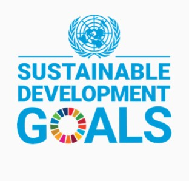
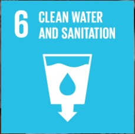
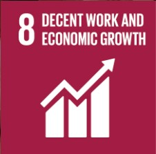
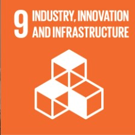
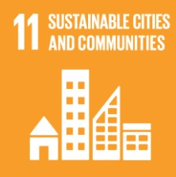
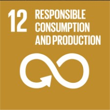
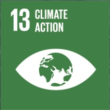

1 TRILLION
plastic bottles
plastic bottles
The Problem
The Nile River — primary water source for millions — is drowning in plastic. Cholera, malaria, flooding. Plastic discarded in Juba today flows downstream, threatening the Sudd wetlands — Africa's largest freshwater reserve — and ultimately reaching the Mediterranean Sea. South Sudan's only recycling plant shut down in 2016 and was never replaced. NILE FORGE is the last line of defense for the Nile ecosystem.

The Solution
Modelled on Gjenge Makers Ltd (Nairobi) — which recycled 200,000+ kg of plastic and created 600 jobs — NILE FORGE adapts this proven model for Juba. No chemicals required. Solar-powered production makes every brick carbon-neutral. A digital traceability system (Nile-Trace) records each kilo of plastic from collection to final product — so donors can say exactly which 500 bottles their investment pulled from the Nile, who collected them, and which building they now form part of.

Product Line
Three tiers of production — built to cross-subsidise impact. High-margin Nile Bench furniture funds the low-cost housing bricks made available to Juba's most vulnerable communities. Every product sold advances the cycle.
Standards & Quality
Construction firms and institutional buyers need verified confidence before adopting recycled materials. The data is unambiguous — Nile Bricks outperform conventional concrete across every measurable dimension. Based on benchmarks established by Gjenge Makers Ltd (Nairobi).
| Feature | Traditional Concrete | NILE FORGE Plastic-Sand |
|---|---|---|
| Compressive Strength | 12–15 MPa | 8–140 MPa Up to 7× stronger |
| Weight | ~2,200 kg/m³ | ~950–1,050 kg/m³ 50% lighter |
| Water Absorption | 5%–10% (porous) | <1% Near waterproof |
| Melting Point | N/A | >350°C Safe in 40°C+ Juba heat |
| Lifespan | 20–30 years | 50+ years Fibrous & flexible |

Theory of Change
Each bottle collected feeds the cycle.
More collection → more production → more revenue → more jobs → more community buy-in → cleaner Nile.

Who We Serve
Implementation
Financials
Full cost recovery projected within 18–24 months. A 200 kg/day production unit generates $3,000–$8,000/month in product sales. Carbon credit revenues from verified offsets provide an additional income stream unavailable to conventional waste projects.
Expected Results
Global Framework

NILE FORGE directly advances six of the United Nations' 17 Sustainable Development Goals — making it eligible for SDG-linked grant programmes, impact bonds, and ESG-mandated institutional funds.






Call to Action
"NILE FORGE is not a waste collection project — it is a circular industrial engine. We solve Juba's infrastructure deficit while providing traceable, dignified Green Jobs to the city's most vulnerable youth. We turn a liability into a structural asset."